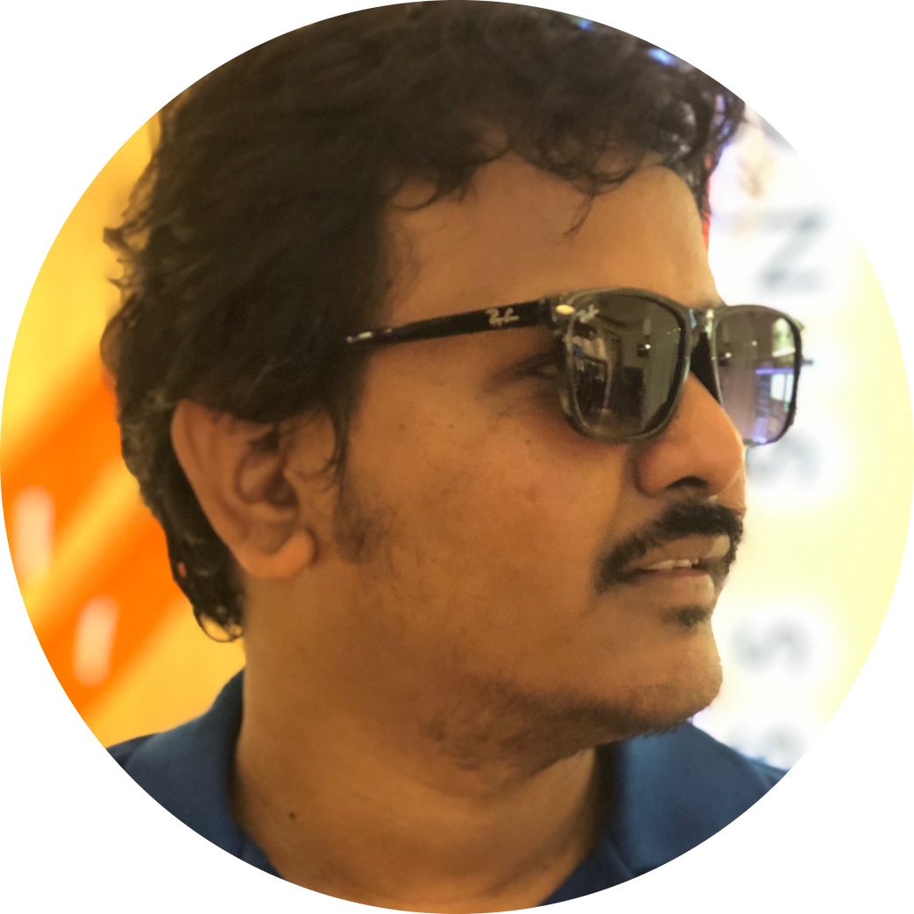

|

|
Mohamed Faiyaz S
Email: faiyaz50@gmail.com
Mobile: +91 9789162450
|
Seeking to leverage strong skills acquired through 16 years of education and 10 years of working experience that fosters mutual growth in a healthy and challenging environment.
Experience
Software Engineer
Aricent- Chennai,Tamilnadu
09/2011 - 12/2013
- Worked on IP-DSLAM prodcut line for developing features in Vx-Works RTOS.
- Worked in IGMP snooping, LACP and system redundancy architecture.
Senior Software Engineer
Aricent- Chennai,Tamilnadu
01/2014 - 06/2016
- Worked on BCM SDK integration for IGMP snooping with 8K scaling and system performance improvement.
- Working on L2 and L3 Protocol development on Microwave Packet Radio platform
- Mainly working on ERPS, ECFM and IPv6 area.
Technical Leader
Aricent- Chennai,Tamilnadu
07/2016 - 01/2018
- Worked on SDK migration activity from lower version to Katana2 Chipset Version.
- Worked on business proposal PoC activity for Segment routing features in OSE RTOS architecture.
- Worked on developing LLDP using BCM CMIC concept, Static LSP and L3VPN IPv4/v6 Handling
- Developed BCM Warmboot concept on L3 features to achieve hitless restart
Technical Leader (Onsite Location)
Altran (Formally Aricent) - Milano,Lombardy
02/2018 - 12/2020
- Worked directly with Customer location for develpment and Integration phase.
- Worked in ECFM offloading feature and implemented the ERPS convergence with ECFM offload failure within 50 ms in customer node.
- Worked on Y1731 PM with ECFM BCM SDK offload using OLP concept.
- Worked on SRv4 and SRv4-TE co-existance and FRR convergence on top of OSPFv2
- Developed TWAMP reflector feature for IPv4 and IPv6
Technical Manager
Capgemini (Formally Altran, Aricent) - Chennai, Tamilnadu
01/2021 - 08/2022
- Worked on Netconf candidate DB implementation in wavence product line for radio services.
- Worked on Security feature deployement development.
Software Engineer IV
Cisco - Chennai, Tamilnadu
09/2022 - Present
- Working on NXOS Platform Independent Module.
- Mainly working on VRRPv2/v3 and HSRP Protocols
Skills
- SQL
- Software Development
- GIT
- Programming
- L2 and L3 Protocols
- Netconf
- ECFM, ERPS, Y.1731
- Broadcom Chipset
- MPLS
- Segment Routing
Education
Diploma in Electronics and Communications
The Karur Politechnic College - Karur, Tamilnadu
05/2008
Bachelor of Electronics and Communications Ehgineering
Velammal Engineering College - Chennai, Tamilnadu
05/2011
Language
Awards
Individual excellence Annual Award on 2015 and 2018